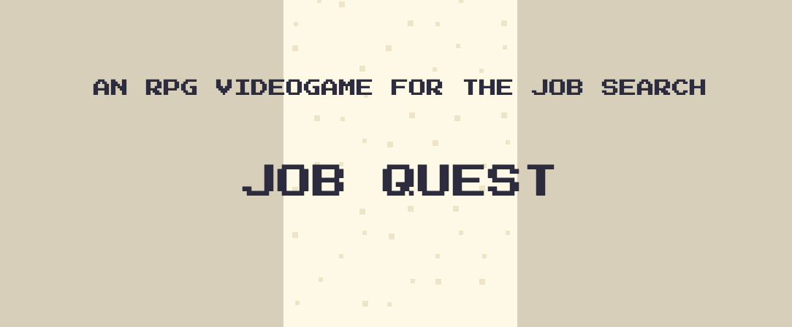

UX DESIGN · GAME DESIGN · USER RESEARCH · 2026
Job Quest
A browser-based game and job-search tool that helps graduating students stay motivated, organize applications, and make career preparation more manageable.
User ResearchGamificationUsability Testing